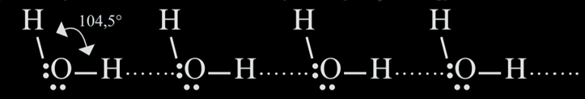
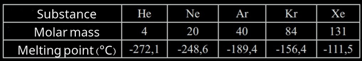

What are intermolecular forces
Intermolecular forces are weak interactions that exist between molecules. These determine the state of matter of substances by influencing their structure, also playing a role in their physical properties such as melting and boiling points and solubility. Intermolecular forces are of two types: hydrogen bonds and van der Waals forces (dipole-dipole, dispersion, induction).
Hydrogen bonds
The hydrogen bonds are the strongest among the intermolecular forces, therefore the hydrogen bonded compounds have the highest boiling points, as they require more energy to break the bonds. These are formed because of the lack of electron coverage in the hydrogen's nucleus. In this bond, along with the hydrogen atom, there are also involved a lone electron pair and a highly electronegative atom. That is why this bond is usually depicted as X-H...Y, where X and Y are represented by the atoms of nitrogen (N), oxygen (O) and fluoride (F).
The thermal anomaly of water
This is how the thermal anomaly of water is explained. In liquid and solid states, the \(\ce{H2O}\) molecules contain hydrogen bonds. However, there is a crucial difference that results in different densities. In (liquid) water, each molecule creates bonds with a hydrogen atom and a lone electron pair from an oxygen (each water molecule bonds with two other water molecules). In ice, however, there are two more bonds created, so that each oxygen atom is surrounded by four hydrogen atoms, having a tetrahedral structure. This determines a looser structure in the case of ice, this being the reason why ice has a lower density, therefore water expands when frozen and it floats in liquid water.
Dipole-dipole interactions
Also called Keesom forces, these types of interactions are found in polar molecules, where we can find two "ends" - a negative (corresponding to the negative partial charge) and a positive one (corresponding to the positive charge). Between the opposite "poles" of a molecule, there are electrostatic attraction forces that keep polar molecules close to each other. These are the second stronger intermolecular forces. They become stronger as the polarity of the bond increases and it becomes weaker when the distance between the molecules increases. The image below shows the spatial orientation of the chemical species in which dipole-dipole interactions are found.

The key difference between hydrogen bonds and dipole-dipole interactions is the nature of the interactions. While dipole-dipole interactions are electrostatic in nature, hydrogen bonds have a slight covalent character (which makes them stronger compared to other intermolecular forces), because of the lack of electron coverage around the hydrogen nucleus.
Ion-dipole interactions
Ion-dipole interactions are relatively strong forces which occur - as the name suggests - between an ion and a dipole (a molecule with unequal distribution of electric charges). Thus, the ion is attracted to the opposite pole of the dipole molecule. For example, in a \(NaCl\) solution, the \(Na^+\) ions are attracted by the negative pole of the water molecule and the \(Cl^-\) ions are attracted by the positive pole of the \(H_2O\) molecule. This force increases with the increasing mass of the ion and dipole moment of the dipole.
Disperion forces
They are also called London forces and they're a very weak type of interaction which occurs in every molecule, both polar and nonpolar. In fact, these are the only forces that can be found in nonpolar molecules and are easy to break as they do not require a great amount of energy. That is why they determine low boiling points and high melting points. Dispersion forces increase as the mass if the molecule increases.
Induction forces
As the name suggests, these interactions occur when a certain property is induced from a chemical species to another. In this case, a charged polar molecule induces a dipole into an atom or a nonpolar molecule by disturbing the arrangement of electrons. These are the weakest types of intermolecular forces and are also called Debye forces.
Written by Maria Mustatea